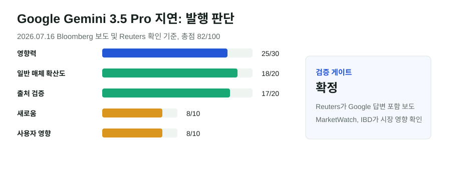

Google Gemini 3.5 Pro 지연: AI 경쟁의 병목이 출시 속도에서 검증으로 옮겨갔다
Bloomberg가 보도한 Gemini 3.5 Pro 지연을 Reuters가 Google 답변과 함께 전했고, MarketWatch와 Investor's Business Daily가 주가와 경쟁 구도를 확인했다. 이번 이슈는 단순한 일정 지연보다 "최상위 모델을 얼마나 빨리, 얼마나 안전하게, 어느 수준의 코딩 성능으로 내놓을 수 있나"라는 문제에 가깝다.
핵심 요약
Google의 모델 지연은 AI 투자의 기대수익과 제품 신뢰도를 동시에 건드렸다
Reuters 전재 기사에 따르면 Bloomberg는 Google이 Gemini 3.5 Pro 출시 일정에서 몇 달 늦어졌고, 특히 코딩 역량을 끌어올리려 한다고 보도했다. Google은 Reuters에 3.5 Pro와 업그레이드된 Flash 모델 등을 파트너와 테스트 중이며 미국 정부와도 생산적으로 협의 중이라고 밝혔다. 같은 날 MarketWatch와 IBD는 Alphabet 주가 하락과 경쟁사 모델 출시 흐름을 연결해 다뤘다.

선정 이유
Gemini는 Google 검색, Android, Workspace, Cloud를 잇는 핵심 AI 축이다. 최상위 모델 지연은 한 회사의 출시 일정 문제가 아니라 기업용 AI, 코딩 에이전트, 클라우드 API, 주가 평가의 기대치를 동시에 흔든다. OpenAI, Anthropic, xAI, Meta, 중국 모델 업체들이 빠르게 새 모델을 내놓는 상황에서 Google이 "더 나은 코딩 성능과 검증"을 위해 지연을 감수한다는 점이 오늘의 메인 뉴스로 충분하다.
점수표
| 기준 | 점수 | 판단 |
|---|---|---|
| 영향력 | 25/30 | Google의 플래그십 모델, 코딩 경쟁, Cloud·Workspace 전략에 직접 연결된다. |
| 일반 주요 매체 확산도 | 18/20 | Reuters, MarketWatch, IBD가 같은 핵심 사실과 시장 반응을 다뤘다. |
| 신뢰도/출처 검증 | 17/20 | Bloomberg 원보도를 Reuters가 Google 답변과 함께 확인했다. 출시 내부 사정은 익명 취재 기반이다. |
| 새로움/중복 회피 | 8/10 | 기존 게시글의 Google 인재 이탈·GPT 모델 출시와 연결되지만, Gemini 3.5 Pro 지연 자체는 새 주제다. |
| 사용자 영향 | 8/10 | 개발자, 기업 AI 구매자, Google Workspace·Cloud 사용자의 모델 선택에 영향을 준다. |
| 블로그 적합도 | 3/5 | 모델 경쟁의 제품·시장 해석에 적합하다. |
| 이미지/도표화 가능성 | 3/5 | 수치가 제한적이라 점수표 중심으로 시각화했다. |
검증표
| 검증 항목 | 결과 | 메모 |
|---|---|---|
| 원문 확인 | 부분 확인 | Bloomberg 원보도는 유료 기사 성격이고, Reuters 전재에서 Google 대변인 답변을 확인했다. |
| 독립 확인 | 확정 | Reuters, MarketWatch, IBD가 일정 지연과 주가 반응을 반복 보도했다. |
| 전문매체 확인 | 부분 확인 | 전문매체의 기술 해석은 제한적이지만, 코딩 성능 병목과 경쟁 모델 맥락은 일반·경제 매체에서 확인된다. |
| 반대 확인 | 확정 | Google은 테스트와 정부 협의가 진행 중이라고 설명했다. 이는 "개발 실패"가 아니라 출시 전 검증 지연으로 봐야 한다. |
| 날짜 확인 | 확정 | 핵심 보도일은 2026년 7월 16일, 글 발행일은 2026년 7월 17일이다. |
| 수치 확인 | 확정 | 주가 하락 폭은 매체별 장중 수치가 달라 단정하지 않고 "하락"과 범위 표현으로 처리했다. |
| 이해관계 확인 | 확정 | 내부 일정은 익명 취재 기반이고, 회사 답변은 Google의 방어적 설명임을 본문에 반영했다. |
본문 해설
이번 보도의 핵심은 Google이 모델을 못 만들었다는 단순한 문장이 아니다. 플래그십 모델은 벤치마크 점수, 코딩 성능, 안전성, 정부 협의, 기업 고객 테스트가 모두 맞아야 공개된다. Reuters가 전한 Google 답변은 "테스트 중"이라는 방어이면서 동시에 출시 판단이 내부 성능 목표와 외부 정책 환경을 함께 본다는 신호다.
시장 반응이 컸던 이유는 AI 투자 논리가 이미 "많이 투자하면 언젠가 선두 모델을 낸다"에서 "투자한 만큼 빠르게 제품과 매출로 돌아오는가"로 바뀌고 있기 때문이다. Alphabet은 검색과 광고에서 막대한 현금흐름을 갖지만, 개발자가 체감하는 코딩 모델과 기업 API 시장에서 뒤처진다는 인식이 생기면 Google Cloud와 Workspace의 AI 프리미엄도 압박을 받는다.
다만 지연 자체를 패배로 단정할 수는 없다. 최상위 모델은 늦게 내더라도 안정성과 비용, 배포 채널에서 이기면 시장을 회복할 수 있다. 오늘의 의미는 Google이 AI 경쟁에서 밀려났다는 결론보다, AI 기업들이 이제 "빠른 발표"보다 "검증된 출시"에 더 큰 비용을 치르기 시작했다는 점이다.
글로벌 시각 vs 한국 시각
이 모듈을 넣은 이유는 Google 모델 지연이 한국 독자에게 단순한 해외 주가 뉴스가 아니기 때문이다. 글로벌 시장에서는 Alphabet의 AI 리더십과 클라우드 경쟁 문제로 읽힌다. 한국에서는 개발자 도구, 기업용 Google Cloud 도입, Workspace AI 기능, 국내 AI 스타트업의 모델 선택 비용 문제로 이어진다.
오늘 발행하지 않은 후보와 이유
OpenAI·Google의 중국 블랙리스트 기업 접근 보도는 FT 중심의 강한 이슈지만 2026년 7월 11일 보도로 오늘 새 뉴스성이 낮고 독립 주요 매체 2곳 조건이 약했다. AI CEO들의 규제 수렴 보도는 어제 DeepMind 감시기구 글과 중복성이 컸다. EU DMA와 AI 어시스턴트 접근권 이슈는 The Verge 해석 중심이라 발행 기준에 못 미쳤다.
출처 링크
- Reuters 전재: Google Gemini launch delayed as tech falls short of internal goals, Bloomberg News reports
- MarketWatch: Alphabet stock falls as Gemini delays suggest Google is struggling to keep up
- Investor's Business Daily: Google Stock Falls Amid Delay In AI Model Release
- 참고: Apple WWDC26 AI 발표
이미지/표 참고 링크
외부 사진·유료 차트·통신사 이미지는 저장하지 않았다. 시각 자료는 본문 점수표와 자체 SVG로만 구성했다.
저작권 주의사항
기사 원문은 요약과 링크로만 처리했다. Reuters, Bloomberg, MarketWatch, IBD의 기사 문장과 사진은 재게시하지 않았다.
발행 전 확인 포인트
- Google이 공식 블로그로 Gemini 3.5 Pro 출시일을 새로 발표하면 날짜를 업데이트한다.
- Alphabet 실적 발표에서 Gemini 일정이나 AI 투자 회수 관련 발언이 나오면 후속 글로 분리한다.
- 주가 수치는 장중·종가 기준이 달라 본문에서 과도하게 단정하지 않는다.